Main Page
Namespaces
Classes
Files
Class List
Class Hierarchy
Class Members
Class Hierarchy
Go to the textual class hierarchy
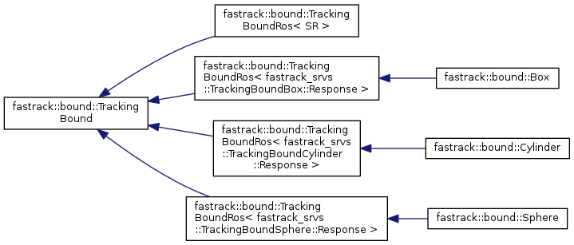
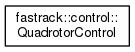
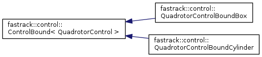
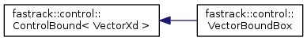
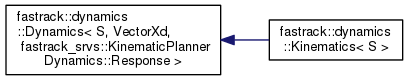
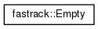
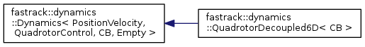
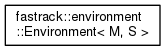
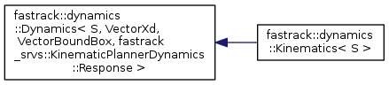
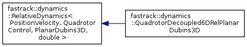
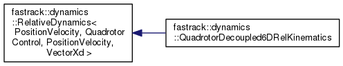
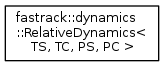
fastrack
Author(s): David Fridovich-Keil
autogenerated on Fri Mar 16 2018 03:06:42